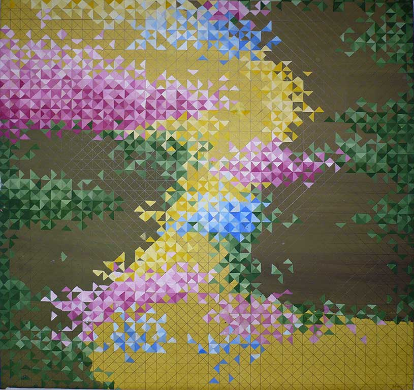

Основы колористики. Типы цветовой композиции и колорита. Понятия гаммы, гармонии, декоративности.
Тип цветовой композиции и колорит соответствуют теме работы.
Авторы работ: Стрига Р., Печерский А., Казимирова Ю., Сапега О., Ровдо А., Липская О.
Просмотр зима 2008

Выставка: луговые цветы

Симпозиум по экологии: птицы в городе
Симпозиум по экологии: птицы над городом
Симпозиум: искусство и пангеометрия
Выставка железобетонных изделий
Афиша пресс-конференции